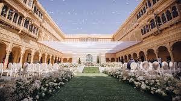

Planning a beautiful wedding and being kind to the planet can go hand-in-hand. With a few smart choices—like plastic-free décor, recyclable invitations, and mindful menus—you can reduce waste and still create a warm, memorable celebration.
Plastic-Free Décor
- Natural materials: prefer marigold/lotus strings, cotton drapes, jute runners, and banana leaves over plastic props.
- Reusable lighting: LED fairy lights and rechargeable candles instead of single-use items.
- Rent don’t buy: arches, vases, signage frames, and furniture can be rented locally.
- Flower foam alternatives: switch to chicken wire, kalsa (earthen pots), and water tubes.
Pro tip: Ask your decorator how much of the setup is reused across events and what items are composted or recycled after teardown.
Recyclable & Plantable Invitations
- Digital-first: send e-invites and WhatsApp RSVP links for most guests.
- Seed paper: if you must print, use plantable seed paper with soy-based inks.
- Minimal packaging: avoid lamination, plastic sleeves, and glitter.
Planet-Friendly Catering
- Plant-forward menus: offer rich vegetarian/vegan stations—Rajasthani thali, millet-based dishes, and seasonal salads.
- Responsible serviceware: steel/ceramic plates; if disposable, choose areca leaf or sugarcane bagasse.
- Waste control: headcount-based batch cooking, labeled bins for wet/dry waste, and NGO tie-ups for surplus food.
Gifts That Don’t Create Clutter
- Gifting plants: small indoor plants (money plant, snake plant, jade) with care cards.
- Local, useful favors: handmade soaps, seeds, artisanal honey, or donation cards.
Travel & Carbon
- Choose venues close to guest clusters; arrange shared shuttle buses.
- Encourage car-pooling via the wedding website/WhatsApp group.
Work with us: Rajdhani Events offers sustainable décor catalogs, seed-paper stationery partners, and surplus-food donation coordination.
Enquire now →
Rajdhani Events
RTH